CODING AGENTS AS PIXEL WORLD MODELS
traex/GPT-6.1-Sol · 0123
点击播放 · 原生 RGB 像素
此结果可播放，但该运行尚未通过最终提交审核。页面展示不代表评测通过。
逐轮保存的候选
回放视频、检查图与代码变化。
每份候选均可单独播放。实际图片检查记录在下方工具轨迹中。
候选 01播放与检查图
点击播放 · 原生 RGB 像素

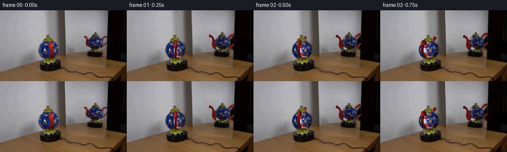
展开代码变化
--- 上一保存版本
+++ 本次保存版本
@@ -0,0 +1,208 @@
+import numpy as np
+from PIL import Image, ImageDraw, ImageFilter
+from scipy.ndimage import map_coordinates, distance_transform_edt, gaussian_filter
+from scipy.interpolate import CubicSpline
+import cv2
+from pathlib import Path
+import artifact_io
+
+ROOT=Path(__file__).resolve().parent
+S=4
+H,W=144*S,256*S
+im=np.array(Image.open(ROOT/'first_frame.png').convert('RGB'))
+hi=np.array(Image.fromarray(im).resize((W,H),Image.Resampling.BICUBIC)).astype(float)
+
+def poly(points):
+ a=Image.new('L',(W,H)); ImageDraw.Draw(a).polygon([(int(x*S),int(y*S)) for x,y in points],fill=255)
+ return np.array(a)/255.
+
+views=[dict(cx=98.0,cy=80.4,rx=20.0,ry=19.6,e=.18,phi=.23,mirror=False),dict(cx=193.2,cy=67.0,rx=16.3,ry=16.0,e=.15,phi=np.pi/2-.23,mirror=True)]
+caps=[poly([(85,64),(85.5,60),(88,57),(93,54),(93,50),(99,50),(100,54),(104,56),(106,59),(108.8,64)]),poly([(181.8,55.2),(183,51),(187.5,47.5),(190,46.4),(190,44.3),(196,44.3),(196,48),(200,50),(202,55.2)])]
+feet=[poly([(91,96),(105,96),(106,98),(110,100),(112,104),(111,107),(85.3,107),(85.3,103),(89,100)]),poly([(187,80.8),(200,81),(200.2,83),(203,85),(203,88),(182,88),(181.5,85),(185,83)])]
+# The stationary plate and all room pixels are retained. Only the ceramic is replaced.
+erase=np.maximum.reduce([
+poly([(76,61),(89,59),(109,59),(120,66),(121,93),(109,100),(85,100),(75,88)]),
+poly([(168,51),(175,50),(181,54),(187,50),(205,51),(216.4,49),(216.4,81),(202,85),(182,86),(173,79),(168,66)])])
+# Fill the exposed neutral wall; the retained ceramic caps and feet cover its limits.
+lowmask=(np.array(Image.fromarray((erase*255).astype(np.uint8)).resize((256,144)))>50).astype(np.uint8)*255
+bgsmall=cv2.inpaint(im,lowmask,6,cv2.INPAINT_TELEA)
+# Keep interpolation out of the static background.
+bg=np.array(Image.fromarray(bgsmall).resize((W,H),Image.Resampling.BICUBIC)).astype(float)
+bg=bg*erase[...,None]+hi*(1-erase[...,None])
+
+# A surface-colour atlas made only from the two initial photographic views.
+TH,TW=384,1024
+atlas_sum=np.zeros((TH,TW,3),float); atlas_weight=np.zeros((TH,TW),float)
+Y,X=np.mgrid[0:H,0:W]; X=(X+.5)/S; Y=(Y+.5)/S
+
+def coords(v):
+ x=(X-v['cx'])/v['rx']; yp=-(Y-v['cy'])/v['ry']
+ z=np.sqrt(np.maximum(0,1-x*x-yp*yp))
+ e=v['e']; yw=yp*np.cos(e)+z*np.sin(e); zw=z*np.cos(e)-yp*np.sin(e)
+ lon=np.arctan2(x,zw); lat=np.arcsin(np.clip(yw,-1,1))
+ return x,yp,z,lon,lat
+
+def light(x,y,z):
+ return .46+.47*z+.10*np.maximum(-x,0)+.045*y
+
+# Remove the foreground red handle from the main photographed body before unwrapping.
+body_sources=[]
+for k,v in enumerate(views):
+ src=im.copy()
+ if k==0:
+ mm=np.zeros((144,256),np.uint8)
+ cv2.fillPoly(mm,[np.array([(98,64),(106,63),(109,70),(109,89),(106,98),(98,98),(98,91),(100,79)],np.int32)],255)
+ src=cv2.inpaint(src,mm,4,cv2.INPAINT_TELEA)
+ src=np.array(Image.fromarray(src).resize((W,H),Image.Resampling.BICUBIC)).astype(float)
+ body_sources.append(src)
+ x,yp,z,lon,lat=coords(v)
+ # Avoid the green neck and pedestal and the silhouette's mixed edge pixels.
+ valid=(x*x+yp*yp<.982**2)&(lat<.90)&(lat>-.99)
+ if k==0:
+ valid&=~((X>97.3)&(X<110)&(Y>63)&(Y<98))
+ else:
+ valid&=(Y>54.4)&(Y<82.0)
+ u=(v['phi']-lon) if v['mirror'] else (lon-v['phi'])
+ ix=np.mod(((u+np.pi)/(2*np.pi)*TW).astype(int),TW)
+ iy=np.clip(((lat+np.pi/2)/np.pi*(TH-1)).astype(int),0,TH-1)
+ weight=z**5
+ weight*=valid
+ color=src/np.maximum(light(x,yp,z)[...,None],.3)
+ for c in range(3):np.add.at(atlas_sum[:,:,c],(iy[valid],ix[valid]),(color[:,:,c]*weight)[valid])
+ np.add.at(atlas_weight,(iy[valid],ix[valid]),weight[valid])
+known=atlas_weight>1e-7
+atlas=np.divide(atlas_sum,atlas_weight[:,:,None],out=np.zeros_like(atlas_sum),where=known[:,:,None])
+# Nearest surface data closes the small unseen seam, and supplies the neck poles.
+idx=distance_transform_edt(~np.tile(known,(1,3)),return_distances=False,return_indices=True)
+tiled=np.tile(atlas,(1,3,1)); tiled=tiled[idx[0],idx[1]]
+atlas=tiled[:,TW:2*TW]
+atlas=gaussian_filter(atlas,(.55,.6,0))
+Image.fromarray(np.clip(atlas,0,255).astype('uint8')).save(ROOT/'.tmp/atlas.png')
+
+# Object geometry: a hollow ceramic loop and a curved, flared pouring spout.
+def tube(points,radii,kind):
+ p=np.array(points,float); t=np.linspace(0,1,len(p)); steps=85
+ ts=np.linspace(0,1,steps)
+ curve=CubicSpline(t,p)(ts); tangent=CubicSpline(t,p)(ts,1)
+ tangent/=np.linalg.norm(tangent,axis=1)[:,None]
+ # All axes lie in the teapot's vertical symmetry plane.
+ normal=np.column_stack([np.zeros(steps),-tangent[:,2],tangent[:,1]])
+ normal/=np.linalg.norm(normal,axis=1)[:,None]
+ side=np.tile([1.,0,0],(steps,1))
+ rad=CubicSpline(t,np.array(radii))(ts)
+ nang=18; a=np.linspace(0,2*np.pi,nang,endpoint=False)
+ normals=normal[:,None,:]*np.cos(a)[None,:,None]+side[:,None,:]*np.sin(a)[None,:,None]
+ verts=curve[:,None,:]+rad[:,None,None]*normals
+ triangles=[]
+ for j in range(steps-1):
+ for h in range(nang):
+ n=(h+1)%nang
+ triangles.extend([[j*nang+h,(j+1)*nang+h,(j+1)*nang+n],[j*nang+h,(j+1)*nang+n,j*nang+n]])
+ # baked tiny cream dots along the glazed loop, along with specular reflectance
+ sparam=np.broadcast_to(ts[:,None],(steps,nang)).reshape(-1)
+ aparam=np.broadcast_to(a[None,:],(steps,nang)).reshape(-1)
+ return dict(verts=verts.reshape(-1,3),normals=normals.reshape(-1,3),tris=np.array(triangles),t=sparam,a=aparam,kind=kind,tip=curve[-1],rad=rad[-1],tangent=tangent[-1])
+handle=tube([(0,.70,.77),(0,1.11,1.21),(0,1.10,1.62),(0,.77,1.86),(0,.18,1.72),(0,-.40,1.13),(0,-.66,.73)],[.13,.135,.14,.135,.115,.105,.14],'handle')
+spout=tube([(0,-.57,-.73),(0,-.40,-1.00),(0,-.07,-1.12),(0,.45,-1.12),(0,.81,-1.31),(0,1.00,-1.63)],[.23,.23,.19,.13,.125,.175],'spout')
+
+# Pure NumPy triangle rasterization (orthographic camera, supersampled output).
+def transform(arr,phi,e):
+ x,y,z=arr.T
+ xx=x*np.cos(phi)+z*np.sin(phi); zz=-x*np.sin(phi)+z*np.cos(phi)
+ yy=y*np.cos(e)-zz*np.sin(e); dd=zz*np.cos(e)+y*np.sin(e)
+ return np.column_stack([xx,yy,dd])
+
+def raster_mesh(canvas,depth,mesh,v,phi):
+ p=transform(mesh['verts'],phi,v['e']); n=transform(mesh['normals'],phi,v['e'])
+ px=(v['cx']+v['rx']*p[:,0])*S-.5; py=(v['cy']-v['ry']*p[:,1])*S-.5
+ pos=np.column_stack([px,py,p[:,2]])
+ # Glazed oxblood red with illumination and several small pale painted speckles.
+ L=np.array([-.43,.58,.69]); L/=np.linalg.norm(L)
+ lam=np.maximum(0,n@L)
+ spec=np.maximum(0,n@((L+np.array([0,0,1]))/np.linalg.norm(L+np.array([0,0,1]))))**40
+ base=np.tile(np.array([143.,24.,18.]),(len(n),1))
+ ta=mesh['t']; aa=mesh['a']
+ dot=np.zeros(len(n))
+ for tc,ac in [(0.12,1.8),(.23,4.55),(.39,1.6),(.51,4.55),(.69,1.8),(.81,4.6),(.95,1.9)]:
+ da=np.arctan2(np.sin(aa-ac),np.cos(aa-ac))
+ dot=np.maximum(dot,np.exp(-((ta-tc)/.017)**2-(da/.19)**2))
+ base=base*(1-dot[:,None]*.62)+np.array([224,181,112])*dot[:,None]*.62
+ color=base*(.48+.59*lam[:,None])+spec[:,None]*np.array([100,92,75])
+ if v['mirror']:color*=.88
+ for ids in mesh['tris']:
+ q=pos[ids]
+ xmin=max(0,int(np.floor(q[:,0].min()))); xmax=min(W-1,int(np.ceil(q[:,0].max())))
+ ymin=max(0,int(np.floor(q[:,1].min()))); ymax=min(H-1,int(np.ceil(q[:,1].max())))
+ if v['mirror']:xmax=min(xmax,int(216.5*S))
+ if xmax<xmin or ymax<ymin:continue
+ ax,ay=q[0,:2]; bx,by=q[1,:2]; cx,cy=q[2,:2]
+ det=(by-cy)*(ax-cx)+(cx-bx)*(ay-cy)
+ if abs(det)<1e-8:continue
+ yy,xx=np.mgrid[ymin:ymax+1,xmin:xmax+1]
+ a=((by-cy)*(xx-cx)+(cx-bx)*(yy-cy))/det
+ b=((cy-ay)*(xx-cx)+(ax-cx)*(yy-cy))/det; c=1-a-b
+ d=a*q[0,2]+b*q[1,2]+c*q[2,2]
+ cur=depth[ymin:ymax+1,xmin:xmax+1]
+ m=(a>=0)&(b>=0)&(c>=0)&(d>cur)
+ if not np.any(m):continue
+ co=a[...,None]*color[ids[0]]+b[...,None]*color[ids[1]]+c[...,None]*color[ids[2]]
+ cur[m]=d[m]; canvas[ymin:ymax+1,xmin:xmax+1][m]=co[m]
+ # Dark recessed pouring aperture, instead of a solid red closed tip.
+ if mesh['kind']=='spout':
+ tip=mesh['tip']; tangent=mesh['tangent']; rad=mesh['rad']*.77
+ normal=np.array([0,-tangent[2],tangent[1]])
+ pts=tip+np.sin(np.linspace(0,2*np.pi,32))[:,None]*np.array([1,0,0])*rad+np.cos(np.linspace(0,2*np.pi,32))[:,None]*normal*rad
+ tt=transform(pts,phi,v['e']); face=transform(tangent[None,:],phi,v['e'])[0]
+ if face[2]>.02:
+ po=[((v['cx']+v['rx']*x)*S,(v['cy']-v['ry']*y)*S) for x,y,z in tt]
+ maskimg=Image.new('L',(W,H)); ImageDraw.Draw(maskimg).polygon(po,fill=255)
+ mask=np.array(maskimg)>0
+ d=float(tt[:,2].mean())+.002
+ mask&=(d>depth)
+ if v['mirror']:mask&=X<216.5
+ canvas[mask]=[49,17,11];depth[mask]=d
+
+pre=[]
+for v in views:
+ x,yp,z,lon,lat=coords(v)
+ mask=x*x+yp*yp<=1
+ # The neck and pedestal cover the truncated poles.
+ mask&=(Y> (62.7 if not v['mirror'] else 54.0))
+ mask&=(Y< (99 if not v['mirror'] else 83.3))
+ pre.append((x,yp,z,lon,lat,mask))
+
+def render(frame):
+ # Constant-speed clockwise rotation, about three quarters of a revolution.
+ angle=frame/4*2*np.pi/7.6
+ canvas=bg.copy(); depth=np.full((H,W),-1e6)
+ for k,v in enumerate(views):
+ phi=v['phi']+angle if v['mirror'] else v['phi']-angle
+ x,yp,z,lon,lat,mask=pre[k]
+ u=phi-lon if v['mirror'] else lon-phi
+ tx=np.mod((u+np.pi)/(2*np.pi)*TW,TW)
+ ty=(lat+np.pi/2)/np.pi*(TH-1)
+ color=np.stack([map_coordinates(atlas[:,:,c],[ty,tx],order=1,mode='wrap') for c in range(3)],axis=2)
+ color*=light(x,yp,z)[...,None]
+ canvas[mask]=color[mask]; depth[mask]=z[mask]
+ raster_mesh(canvas,depth,handle,v,phi)
+ raster_mesh(canvas,depth,spout,v,phi)
+ # Exact photographic circular lid and pedestal, stationary in silhouette.
+ cap=caps[k]; foot=feet[k]
+ # Caps in front of far attachments, but not the near handle/spout.
+ cm=(cap>0)&(depth<.75)
+ fm=(foot>0)&(depth<.85)
+ canvas[cm]=hi[cm];canvas[fm]=hi[fm]
+ # Retain the fine ceramic collar around each stand without changing the base.
+ # Mirror surface ends at its photographed right edge.
+ canvas[X>216.5]=hi[X>216.5]
+ return np.array(Image.fromarray(np.clip(canvas,0,255).astype('uint8')).resize((256,144),Image.Resampling.LANCZOS))
+
+def main():
+ frames=[im.copy()]
+ for i in range(1,20):
+ fr=render(i)
+ frames.append(fr)
+ frames=np.stack(frames).astype(np.uint8)
+ artifact_io.save(frames,ROOT)
+ Image.fromarray(render(0)).save(ROOT/'.tmp/render0.png')
+if __name__=='__main__':main()
候选 02播放与检查图
点击播放 · 原生 RGB 像素

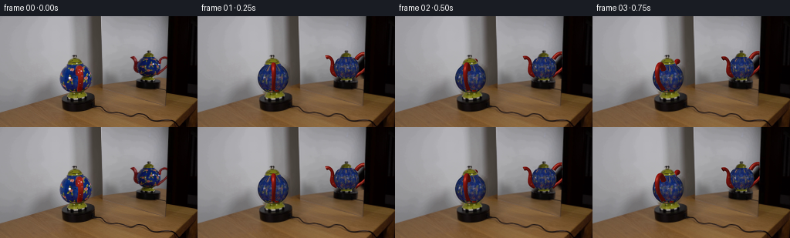
展开代码变化
--- 上一保存版本 +++ 本次保存版本 @@ -57,22 +57,35 @@ body_sources.append(src) x,yp,z,lon,lat=coords(v) # Avoid the green neck and pedestal and the silhouette's mixed edge pixels. - valid=(x*x+yp*yp<.982**2)&(lat<.90)&(lat>-.99) + valid=(x*x+yp*yp<.982**2)&(lat<.70)&(lat>-.77) if k==0: valid&=~((X>97.3)&(X<110)&(Y>63)&(Y<98)) else: - valid&=(Y>54.4)&(Y<82.0) + valid&=(Y>56.0)&(Y<80.5) u=(v['phi']-lon) if v['mirror'] else (lon-v['phi']) ix=np.mod(((u+np.pi)/(2*np.pi)*TW).astype(int),TW) iy=np.clip(((lat+np.pi/2)/np.pi*(TH-1)).astype(int),0,TH-1) weight=z**5 + # Only points supported by the measured ceramic silhouette, not its blurred background. + interior=(src[:,:,2]>src[:,:,0]*1.23)&(src[:,:,2]>src[:,:,1]*1.16) + # Flowers are retained when surrounded by blue enamel. + interior=gaussian_filter(interior.astype(float),1.5*S)>.28 + valid&=interior weight*=valid color=src/np.maximum(light(x,yp,z)[...,None],.3) for c in range(3):np.add.at(atlas_sum[:,:,c],(iy[valid],ix[valid]),(color[:,:,c]*weight)[valid]) np.add.at(atlas_weight,(iy[valid],ix[valid]),weight[valid]) known=atlas_weight>1e-7 atlas=np.divide(atlas_sum,atlas_weight[:,:,None],out=np.zeros_like(atlas_sum),where=known[:,:,None]) -# Nearest surface data closes the small unseen seam, and supplies the neck poles. +# Fill unseen longitudes from the opposite photographed hemisphere, never from +# the room or the poles. The painted floral motif repeats around this vessel. +for off in [TW//2,TW//3,-TW//3,TW//4,-TW//4]: + donor=np.roll(known,off,axis=1) + take=(~known)&donor + shifted=np.roll(atlas,off,axis=1) + atlas[take]=shifted[take];known[take]=True +# For the small unobserved north/south bands use the nearest enamel, with +# latitude modulation, so no long blank streaks can appear as the pot turns. idx=distance_transform_edt(~np.tile(known,(1,3)),return_distances=False,return_indices=True) tiled=np.tile(atlas,(1,3,1)); tiled=tiled[idx[0],idx[1]] atlas=tiled[:,TW:2*TW] @@ -102,8 +115,8 @@ sparam=np.broadcast_to(ts[:,None],(steps,nang)).reshape(-1) aparam=np.broadcast_to(a[None,:],(steps,nang)).reshape(-1) return dict(verts=verts.reshape(-1,3),normals=normals.reshape(-1,3),tris=np.array(triangles),t=sparam,a=aparam,kind=kind,tip=curve[-1],rad=rad[-1],tangent=tangent[-1]) -handle=tube([(0,.70,.77),(0,1.11,1.21),(0,1.10,1.62),(0,.77,1.86),(0,.18,1.72),(0,-.40,1.13),(0,-.66,.73)],[.13,.135,.14,.135,.115,.105,.14],'handle') -spout=tube([(0,-.57,-.73),(0,-.40,-1.00),(0,-.07,-1.12),(0,.45,-1.12),(0,.81,-1.31),(0,1.00,-1.63)],[.23,.23,.19,.13,.125,.175],'spout') +handle=tube([(0,.70,.77),(0,1.11,1.21),(0,1.10,1.62),(0,.77,1.86),(0,.18,1.72),(0,-.40,1.13),(0,-.66,.73)],[.17,.155,.15,.15,.13,.12,.17],'handle') +spout=tube([(0,-.57,-.73),(0,-.40,-1.00),(0,-.07,-1.12),(0,.45,-1.12),(0,.81,-1.31),(0,.84,-1.63)],[.23,.23,.19,.13,.125,.175],'spout') # Pure NumPy triangle rasterization (orthographic camera, supersampled output). def transform(arr,phi,e):
候选 03播放与检查图
点击播放 · 原生 RGB 像素
展开代码变化
--- 上一保存版本
+++ 本次保存版本
@@ -16,7 +16,7 @@
a=Image.new('L',(W,H)); ImageDraw.Draw(a).polygon([(int(x*S),int(y*S)) for x,y in points],fill=255)
return np.array(a)/255.
-views=[dict(cx=98.0,cy=80.4,rx=20.0,ry=19.6,e=.18,phi=.23,mirror=False),dict(cx=193.2,cy=67.0,rx=16.3,ry=16.0,e=.15,phi=np.pi/2-.23,mirror=True)]
+views=[dict(cx=98.0,cy=80.0,rx=20.0,ry=18.8,e=.18,phi=.23,mirror=False),dict(cx=193.2,cy=66.9,rx=15.4,ry=15.3,e=.15,phi=np.pi/2-.23,mirror=True)]
caps=[poly([(85,64),(85.5,60),(88,57),(93,54),(93,50),(99,50),(100,54),(104,56),(106,59),(108.8,64)]),poly([(181.8,55.2),(183,51),(187.5,47.5),(190,46.4),(190,44.3),(196,44.3),(196,48),(200,50),(202,55.2)])]
feet=[poly([(91,96),(105,96),(106,98),(110,100),(112,104),(111,107),(85.3,107),(85.3,103),(89,100)]),poly([(187,80.8),(200,81),(200.2,83),(203,85),(203,88),(182,88),(181.5,85),(185,83)])]
# The stationary plate and all room pixels are retained. Only the ceramic is replaced.
@@ -30,9 +30,8 @@
bg=np.array(Image.fromarray(bgsmall).resize((W,H),Image.Resampling.BICUBIC)).astype(float)
bg=bg*erase[...,None]+hi*(1-erase[...,None])
-# A surface-colour atlas made only from the two initial photographic views.
+# A continuous surface-colour atlas sampled from the photographic views.
TH,TW=384,1024
-atlas_sum=np.zeros((TH,TW,3),float); atlas_weight=np.zeros((TH,TW),float)
Y,X=np.mgrid[0:H,0:W]; X=(X+.5)/S; Y=(Y+.5)/S
def coords(v):
@@ -45,51 +44,47 @@
def light(x,y,z):
return .46+.47*z+.10*np.maximum(-x,0)+.045*y
-# Remove the foreground red handle from the main photographed body before unwrapping.
-body_sources=[]
+V,U=np.mgrid[0:TH,0:TW]
+u=(U+.5)/TW*(2*np.pi)-np.pi
+lat=(V+.5)/TH*np.pi-np.pi/2
+atlas_sum=np.zeros((TH,TW,3));atlas_weight=np.zeros((TH,TW))
for k,v in enumerate(views):
src=im.copy()
if k==0:
mm=np.zeros((144,256),np.uint8)
cv2.fillPoly(mm,[np.array([(98,64),(106,63),(109,70),(109,89),(106,98),(98,98),(98,91),(100,79)],np.int32)],255)
src=cv2.inpaint(src,mm,4,cv2.INPAINT_TELEA)
- src=np.array(Image.fromarray(src).resize((W,H),Image.Resampling.BICUBIC)).astype(float)
- body_sources.append(src)
- x,yp,z,lon,lat=coords(v)
- # Avoid the green neck and pedestal and the silhouette's mixed edge pixels.
- valid=(x*x+yp*yp<.982**2)&(lat<.70)&(lat>-.77)
+ src=src.astype(float)
+ lon=v['phi']-u if v['mirror'] else u+v['phi']
+ xx=np.cos(lat)*np.sin(lon); yw=np.sin(lat); zw=np.cos(lat)*np.cos(lon)
+ yy=yw*np.cos(v['e'])-zw*np.sin(v['e']); zz=zw*np.cos(v['e'])+yw*np.sin(v['e'])
+ px=v['cx']+v['rx']*xx;py=v['cy']-v['ry']*yy
+ valid=(zz>.24)&(lat<.79)&(lat>-.94)
if k==0:
- valid&=~((X>97.3)&(X<110)&(Y>63)&(Y<98))
- else:
- valid&=(Y>56.0)&(Y<80.5)
- u=(v['phi']-lon) if v['mirror'] else (lon-v['phi'])
- ix=np.mod(((u+np.pi)/(2*np.pi)*TW).astype(int),TW)
- iy=np.clip(((lat+np.pi/2)/np.pi*(TH-1)).astype(int),0,TH-1)
- weight=z**5
- # Only points supported by the measured ceramic silhouette, not its blurred background.
- interior=(src[:,:,2]>src[:,:,0]*1.23)&(src[:,:,2]>src[:,:,1]*1.16)
- # Flowers are retained when surrounded by blue enamel.
- interior=gaussian_filter(interior.astype(float),1.5*S)>.28
- valid&=interior
- weight*=valid
- color=src/np.maximum(light(x,yp,z)[...,None],.3)
- for c in range(3):np.add.at(atlas_sum[:,:,c],(iy[valid],ix[valid]),(color[:,:,c]*weight)[valid])
- np.add.at(atlas_weight,(iy[valid],ix[valid]),weight[valid])
-known=atlas_weight>1e-7
-atlas=np.divide(atlas_sum,atlas_weight[:,:,None],out=np.zeros_like(atlas_sum),where=known[:,:,None])
-# Fill unseen longitudes from the opposite photographed hemisphere, never from
-# the room or the poles. The painted floral motif repeats around this vessel.
-for off in [TW//2,TW//3,-TW//3,TW//4,-TW//4]:
- donor=np.roll(known,off,axis=1)
- take=(~known)&donor
+ valid&=(py>63.6)&(py<96.5)&(~((px>97.4)&(px<110.0)&(py>63)))
+ else:valid&=(py>55.7)&(py<80.6)
+ color=np.stack([map_coordinates(src[:,:,c],[py,px],order=1,mode='nearest') for c in range(3)],axis=2)
+ # If the projected point lies outside enamel, it is not texture evidence.
+ blue=(src[:,:,2]>src[:,:,0]*1.18)&(src[:,:,2]>src[:,:,1]*1.12)
+ support=gaussian_filter(blue.astype(float),1.)
+ valid&=map_coordinates(support,[py,px],order=1,mode='nearest')>.32
+ weight=np.maximum(zz,0)**8*valid
+ color/=np.maximum(light(xx,yy,zz)[...,None],.3)
+ atlas_sum+=color*weight[...,None];atlas_weight+=weight
+# Softly merge camera samples, preserving the real painted ornament.
+ws=gaussian_filter(atlas_weight,(.8,.8),mode='wrap')
+cs=gaussian_filter(atlas_sum,(.8,.8,0),mode='wrap')
+known=ws>1e-5
+atlas=np.divide(cs,ws[...,None],out=np.zeros_like(cs),where=known[...,None])
+# Close the unseen longitude using the vessel's repeating floral pattern.
+for off in [TW//2,TW//3,-TW//3]:
+ donor=np.roll(known,off,axis=1);take=(~known)&donor
shifted=np.roll(atlas,off,axis=1)
atlas[take]=shifted[take];known[take]=True
-# For the small unobserved north/south bands use the nearest enamel, with
-# latitude modulation, so no long blank streaks can appear as the pot turns.
idx=distance_transform_edt(~np.tile(known,(1,3)),return_distances=False,return_indices=True)
-tiled=np.tile(atlas,(1,3,1)); tiled=tiled[idx[0],idx[1]]
+tiled=np.tile(atlas,(1,3,1));tiled=tiled[idx[0],idx[1]]
atlas=tiled[:,TW:2*TW]
-atlas=gaussian_filter(atlas,(.55,.6,0))
+atlas=gaussian_filter(atlas,(.8,.7,0))
Image.fromarray(np.clip(atlas,0,255).astype('uint8')).save(ROOT/'.tmp/atlas.png')
# Object geometry: a hollow ceramic loop and a curved, flared pouring spout.
候选 04播放与检查图
点击播放 · 原生 RGB 像素

展开代码变化
代码未变化；重新保存了产物。
候选 05播放与检查图
候选 06播放与检查图
点击播放 · 原生 RGB 像素
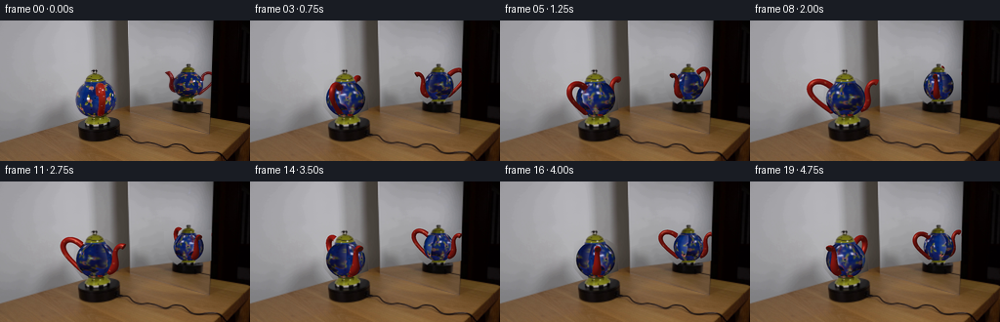
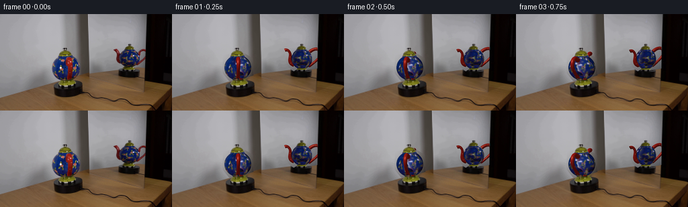
展开代码变化
--- 上一保存版本
+++ 本次保存版本
@@ -28,6 +28,24 @@
bgsmall=cv2.inpaint(im,lowmask,6,cv2.INPAINT_TELEA)
# Keep interpolation out of the static background.
bg=np.array(Image.fromarray(bgsmall).resize((W,H),Image.Resampling.BICUBIC)).astype(float)
+# Reconstruct the neutral wall analytically: inpainting near the mirror edge
+# must not smear the black cabinet into the newly exposed reflection.
+def wall_fit(bounds,edge,sel):
+ x0,x1,y0,y1=bounds
+ yy,xx=np.mgrid[0:144,0:256]
+ m=(xx>=x0)&(xx<=x1)&(yy>=y0)&(yy<=y1)&(lowmask==0)
+ m&=(yy<edge(xx))&(im.max(2)-im.min(2)<19)&(im.mean(2)>70)
+ xn=(xx-160)/80.;yn=(yy-70)/50.
+ basis=np.stack([np.ones_like(xn),xn,yn,xn*xn,xn*yn,yn*yn],axis=-1)
+ co=np.linalg.lstsq(basis[m],im[m].astype(float),rcond=None)[0]
+ xh=(X0-160)/80.;yh=(Y0-70)/50.
+ bh=np.stack([np.ones_like(xh),xh,yh,xh*xh,xh*yh,yh*yh],axis=-1)
+ fit=bh@co
+ use=(erase>0)&sel&(Y0<edge(X0))
+ bg[use]=fit[use]
+Y0,X0=np.mgrid[0:H,0:W];X0=(X0+.5)/S;Y0=(Y0+.5)/S
+wall_fit((50,130,38,102),lambda x:134-.35*x,X0<132)
+wall_fit((135,216,34,89),lambda x:111.8-.14*x,X0>132)
bg=bg*erase[...,None]+hi*(1-erase[...,None])
# A continuous surface-colour atlas sampled from the photographic views.
@@ -85,6 +103,16 @@
tiled=np.tile(atlas,(1,3,1));tiled=tiled[idx[0],idx[1]]
atlas=tiled[:,TW:2*TW]
atlas=gaussian_filter(atlas,(.8,.7,0))
+# Finish the narrow unobserved polar bands with ornament of the same scale.
+for row in range(TH):
+ la=(row+.5)/TH*np.pi-np.pi/2
+ if la>.66:
+ donor=int((.66-(la-.66)*.70+np.pi/2)/np.pi*TH)
+ atlas[row]=atlas[donor]
+ elif la<-.73:
+ donor=int((-.73+(-.73-la)*.70+np.pi/2)/np.pi*TH)
+ atlas[row]=atlas[donor]
+
Image.fromarray(np.clip(atlas,0,255).astype('uint8')).save(ROOT/'.tmp/atlas.png')
# Object geometry: a hollow ceramic loop and a curved, flared pouring spout.
@@ -110,7 +138,7 @@
sparam=np.broadcast_to(ts[:,None],(steps,nang)).reshape(-1)
aparam=np.broadcast_to(a[None,:],(steps,nang)).reshape(-1)
return dict(verts=verts.reshape(-1,3),normals=normals.reshape(-1,3),tris=np.array(triangles),t=sparam,a=aparam,kind=kind,tip=curve[-1],rad=rad[-1],tangent=tangent[-1])
-handle=tube([(0,.70,.77),(0,1.11,1.21),(0,1.10,1.62),(0,.77,1.86),(0,.18,1.72),(0,-.40,1.13),(0,-.66,.73)],[.17,.155,.15,.15,.13,.12,.17],'handle')
+handle=tube([(0,.70,.77),(0,.95,1.21),(0,.94,1.62),(0,.66,1.86),(0,.18,1.72),(0,-.40,1.13),(0,-.66,.73)],[.17,.155,.15,.15,.13,.12,.17],'handle')
spout=tube([(0,-.57,-.73),(0,-.40,-1.00),(0,-.07,-1.12),(0,.45,-1.12),(0,.81,-1.31),(0,.84,-1.63)],[.23,.23,.19,.13,.125,.175],'spout')
# Pure NumPy triangle rasterization (orthographic camera, supersampled output).
候选 07播放与检查图
点击播放 · 原生 RGB 像素
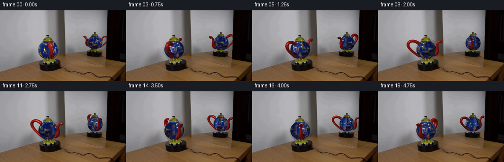
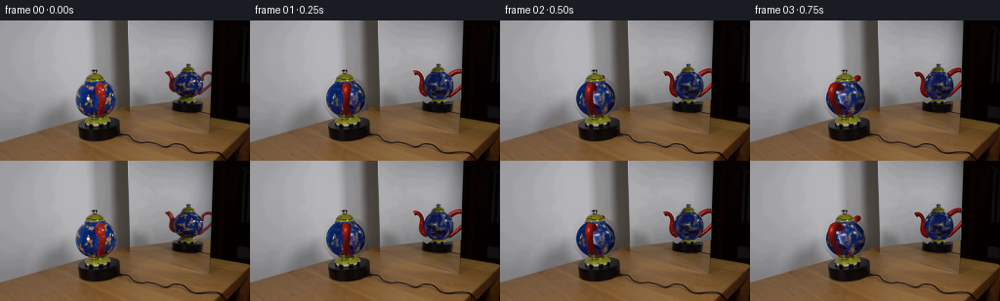
展开代码变化
--- 上一保存版本
+++ 本次保存版本
@@ -128,7 +128,8 @@
rad=CubicSpline(t,np.array(radii))(ts)
nang=18; a=np.linspace(0,2*np.pi,nang,endpoint=False)
normals=normal[:,None,:]*np.cos(a)[None,:,None]+side[:,None,:]*np.sin(a)[None,:,None]
- verts=curve[:,None,:]+rad[:,None,None]*normals
+ offset=normal[:,None,:]*np.cos(a)[None,:,None]+side[:,None,:]*np.sin(a)[None,:,None]*(1.40 if kind=='handle' else 1.)
+ verts=curve[:,None,:]+rad[:,None,None]*offset
triangles=[]
for j in range(steps-1):
for h in range(nang):
@@ -231,7 +232,10 @@
# Retain the fine ceramic collar around each stand without changing the base.
# Mirror surface ends at its photographed right edge.
canvas[X>216.5]=hi[X>216.5]
- return np.array(Image.fromarray(np.clip(canvas,0,255).astype('uint8')).resize((256,144),Image.Resampling.LANCZOS))
+ out=np.array(Image.fromarray(np.clip(canvas,0,255).astype('uint8')).resize((256,144),Image.Resampling.LANCZOS)).astype(float)
+ # Preserve every static photographed pixel outside the moving ceramic.
+ baseline=np.array(Image.fromarray(hi.astype('uint8')).resize((256,144),Image.Resampling.LANCZOS)).astype(float)
+ return np.clip(im.astype(float)+out-baseline,0,255).astype('uint8')
def main():
frames=[im.copy()]
可观测工具轨迹
实际执行的命令与返回图片。
命令 1exit 0
/bin/bash -lc "ls -la && cat prompt.txt && printf '\\n---RULES---\\n' && cat GENERATION_RULES.md"
命令 2exit 0
/bin/bash -lc "cat artifact_io.py && python - <<'PY'
from PIL import Image
im=Image.open('first_frame.png'); print(im.size)
im.resize((1024,576)).save('.tmp/enlarged.png')
PY"命令 3exit 0
/bin/bash -lc "python - <<'PY' import importlib.util for m in ['numpy','scipy','PIL','cv2','numba']: print(m, bool(importlib.util.find_spec(m))) PY"
命令 4exit 0
/bin/bash -lc "python - <<'PY'
from PIL import Image
im=Image.open('first_frame.png')
im.crop((64,42,133,115)).resize((552,584)).save('.tmp/main.png')
im.crop((161,37,221,96)).resize((480,472)).save('.tmp/mirror.png')
PY"命令 5exit 0
/bin/bash -lc "python - <<'PY'
from PIL import Image
im=Image.open('first_frame.png')
im.resize((1536,864),Image.Resampling.NEAREST).save('.tmp/nearest.png')
PY"命令 6exit 0
/bin/bash -lc "cat > generate.py <<'PY'
import numpy as np
from PIL import Image, ImageDraw, ImageFilter
from scipy.ndimage import map_coordinates, distance_transform_edt, gaussian_filter
from scipy.interpolate import CubicSpline
import cv2
from pathlib import Path
import artifact_io
ROOT=Path(__file__).resolve().parent
S=4
H,W=144*S,256*S
im=np.array(Image.open(ROOT/'first_frame.png').convert('RGB'))
hi=np.array(Image.fromarray(im).resize((W,H),Image.Resampling.BICUBIC)).astype(float)
def poly(points):
a=Image.new('L',(W,H)); ImageDraw.Draw(a).polygon([(int(x*S),int(y*S)) for x,y in points],fill=255)
return np.array(a)/255.
views=[dict(cx=98.0,cy=80.4,rx=20.0,ry=19.6,e=.18,phi=.23,mirror=False),dict(cx=193.2,cy=67.0,rx=16.3,ry=16.0,e=.15,phi=np.pi/2-.23,mirror=True)]
caps=[poly([(85,64),(85.5,60),(88,57),(93,54),(93,50),(99,50),(100,54),(104,56),(106,59),(108.8,64)]),poly([(181.8,55.2),(183,51),(187.5,47.5),(190,46.4),(190,44.3),(196,44.3),(196,48),(200,50),(202,55.2)])]
feet=[poly([(91,96),(105,96),(106,98),(110,100),(112,104),(111,107),(85.3,107),(85.3,103),(89,100)]),poly([(187,80.8),(200,81),(200.2,83),(203,85),(203,88),(182,88),(181.5,85),(185,83)])]
# The stationary plate and all room pixels are retained. Only the ceramic is replaced.
erase=np.maximum.reduce([
poly([(76,61),(89,59),(109,59),(120,66),(121,93),(109,100),(85,100),(75,88)]),
poly([(168,51),(175,50),(181,54),(187,50),(205,51),(216.4,49),(216.4,81),(202,85),(182,86),(173,79),(168,66)])])
# Fill the exposed neutral wall; the retained ceramic caps and feet cover its limits.
lowmask=(np.array(Image.fromarray((erase*255).astype(np.uint8)).resize((256,144)))>50).astype(np.uint8)*255
bgsmall=cv2.inpaint(im,lowmask,6,cv2.INPAINT_TELEA)
# Keep interpolation out of the static background.
bg=np.array(Image.fromarray(bgsmall).resize((W,H),Image.Resampling.BICUBIC)).astype(float)
bg=bg*erase[...,None]+hi*(1-erase[...,None])
# A surface-colour atlas made only from the two initial photographic views.
TH,TW=384,1024
atlas_sum=np.zeros((TH,TW,3),float); atlas_weight=np.zeros((TH,TW),float)
Y,X=np.mgrid[0:H,0:W]; X=(X+.5)/S; Y=(Y+.5)/S
def coords(v):
x=(X-v['cx'])/v['rx']; yp=-(Y-v['cy'])/v['ry']
z=np.sqrt(np.maximum(0,1-x*x-yp*yp))
e=v['e']; yw=yp*np.cos(e)+z*np.sin(e); zw=z*np.cos(e)-yp*np.sin(e)
lon=np.arctan2(x,zw); lat=np.arcsin(np.clip(yw,-1,1))
return x,yp,z,lon,lat
def light(x,y,z):
return .46+.47*z+.10*np.maximum(-x,0)+.045*y
# Remove the foreground red handle from the main photographed body before unwrapping.
body_sources=[]
for k,v in enumerate(views):
src=im.copy()
if k==0:
mm=np.zeros((144,256),np.uint8)
cv2.fillPoly(mm,[np.array([(98,64),(106,63),(109,70),(109,89),(106,98),(98,98),(98,91),(100,79)],np.int32)],255)
src=cv2.inpaint(src,mm,4,cv2.INPAINT_TELEA)
src=np.array(Image.fromarray(src).resize((W,H),Image.Resampling.BICUBIC)).astype(float)
body_sources.append(src)
x,yp,z,lon,lat=coords(v)
# Avoid the green neck and pedestal and the silhouette's mixed edge pixels.
valid=(x*x+yp*yp<.982**2)&(lat<.90)&(lat>-.99)
if k==0:
valid&=~((X>97.3)&(X<110)&(Y>63)&(Y<98))
else:
valid&=(Y>54.4)&(Y<82.0)
u=(v['phi']-lon) if v['mirror'] else (lon-v['phi'])
ix=np.mod(((u+np.pi)/(2*np.pi)*TW).astype(int),TW)
iy=np.clip(((lat+np.pi/2)/np.pi*(TH-1)).astype(int),0,TH-1)
weight=z**5
weight*=valid
color=src/np.maximum(light(x,yp,z)[...,None],.3)
for c in range(3):np.add.at(atlas_sum[:,:,c],(iy[valid],ix[valid]),(color[:,:,c]*weight)[valid])
np.add.at(atlas_weight,(iy[valid],ix[valid]),weight[valid])
known=atlas_weight>1e-7
atlas=np.divide(atlas_sum,atlas_weight[:,:,None],out=np.zeros_like(atlas_sum),where=known[:,:,None])
# Nearest surface data closes the small unseen seam, and supplies the neck poles.
idx=distance_transform_edt(~np.tile(known,(1,3)),return_distances=False,return_indices=True)
tiled=np.tile(atlas,(1,3,1)); tiled=tiled[idx[0],idx[1]]
atlas=tiled[:,TW:2*TW]
atlas=gaussian_filter(atlas,(.55,.6,0))
Image.fromarray(np.clip(atlas,0,255).astype('uint8')).save(ROOT/'.tmp/atlas.png')
# Object geometry: a hollow ceramic loop and a curved, flared pouring spout.
def tube(points,radii,kind):
p=np.array(points,float); t=np.linspace(0,1,len(p)); steps=85
ts=np.linspace(0,1,steps)
curve=CubicSpline(t,p)(ts); tangent=CubicSpline(t,p)(ts,1)
tangent/=np.linalg.norm(tangent,axis=1)[:,None]
# All axes lie in the teapot's vertical symmetry plane.
normal=np.column_stack([np.zeros(steps),-tangent[:,2],tangent[:,1]])
normal/=np.linalg.norm(normal,axis=1)[:,None]
side=np.tile([1.,0,0],(steps,1))
rad=CubicSpline(t,np.array(radii))(ts)
nang=18; a=np.linspace(0,2*np.pi,nang,endpoint=False)
normals=normal[:,None,:]*np.cos(a)[None,:,None]+side[:,None,:]*np.sin(a)[None,:,None]
verts=curve[:,None,:]+rad[:,None,None]*normals
triangles=[]
for j in range(steps-1):
for h in range(nang):
n=(h+1)%nang
triangles.extend([[j*nang+h,(j+1)*nang+h,(j+1)*nang+n],[j*nang+h,(j+1)*nang+n,j*nang+n]])
# baked tiny cream dots along the glazed loop, along with specular reflectance
sparam=np.broadcast_to(ts[:,None],(steps,nang)).reshape(-1)
aparam=np.broadcast_to(a[None,:],(steps,nang)).reshape(-1)
return dict(verts=verts.reshape(-1,3),normals=normals.reshape(-1,3),tris=np.array(triangles),t=sparam,a=aparam,kind=kind,tip=curve[-1],rad=rad[-1],tangent=tangent[-1])
handle=tube([(0,.70,.77),(0,1.11,1.21),(0,1.10,1.62),(0,.77,1.86),(0,.18,1.72),(0,-.40,1.13),(0,-.66,.73)],[.13,.135,.14,.135,.115,.105,.14],'handle')
spout=tube([(0,-.57,-.73),(0,-.40,-1.00),(0,-.07,-1.12),(0,.45,-1.12),(0,.81,-1.31),(0,1.00,-1.63)],[.23,.23,.19,.13,.125,.175],'spout')
# Pure NumPy triangle rasterization (orthographic camera, supersampled output).
def transform(arr,phi,e):
x,y,z=arr.T
xx=x*np.cos(phi)+z*np.sin(phi); zz=-x*np.sin(phi)+z*np.cos(phi)
yy=y*np.cos(e)-zz*np.sin(e); dd=zz*np.cos(e)+y*np.sin(e)
return np.column_stack([xx,yy,dd])
def raster_mesh(canvas,depth,mesh,v,phi):
p=transform(mesh['verts'],phi,v['e']); n=transform(mesh['normals'],phi,v['e'])
px=(v['cx']+v['rx']*p[:,0])*S-.5; py=(v['cy']-v['ry']*p[:,1])*S-.5
pos=np.column_stack([px,py,p[:,2]])
# Glazed oxblood red with illumination and several small pale painted speckles.
L=np.array([-.43,.58,.69]); L/=np.linalg.norm(L)
lam=np.maximum(0,n@L)
spec=np.maximum(0,n@((L+np.array([0,0,1]))/np.linalg.norm(L+np.array([0,0,1]))))**40
base=np.tile(np.array([143.,24.,18.]),(len(n),1))
ta=mesh['t']; aa=mesh['a']
dot=np.zeros(len(n))
for tc,ac in [(0.12,1.8),(.23,4.55),(.39,1.6),(.51,4.55),(.69,1.8),(.81,4.6),(.95,1.9)]:
da=np.arctan2(np.sin(aa-ac),np.cos(aa-ac))
dot=np.maximum(dot,np.exp(-((ta-tc)/.017)**2-(da/.19)**2))
base=base*(1-dot[:,None]*.62)+np.array([224,181,112])*dot[:,None]*.62
color=base*(.48+.59*lam[:,None])+spec[:,None]*np.array([100,92,75])
if v['mirror']:color*=.88
for ids in mesh['tris']:
q=pos[ids]
xmin=max(0,int(np.floor(q[:,0].min()))); xmax=min(W-1,int(np.ceil(q[:,0].max())))
ymin=max(0,int(np.floor(q[:,1].min()))); ymax=min(H-1,int(np.ceil(q[:,1].max())))
if v['mirror']:xmax=min(xmax,int(216.5*S))
if xmax<xmin or ymax<ymin:continue
ax,ay=q[0,:2]; bx,by=q[1,:2]; cx,cy=q[2,:2]
det=(by-cy)*(ax-cx)+(cx-bx)*(ay-cy)
if abs(det)<1e-8:continue
yy,xx=np.mgrid[ymin:ymax+1,xmin:xmax+1]
a=((by-cy)*(xx-cx)+(cx-bx)*(yy-cy))/det
b=((cy-ay)*(xx-cx)+(ax-cx)*(yy-cy))/det; c=1-a-b
d=a*q[0,2]+b*q[1,2]+c*q[2,2]
cur=depth[ymin:ymax+1,xmin:xmax+1]
m=(a>=0)&(b>=0)&(c>=0)&(d>cur)
if not np.any(m):continue
co=a[...,None]*color[ids[0]]+b[...,None]*color[ids[1]]+c[...,None]*color[ids[2]]
cur[m]=d[m]; canvas[ymin:ymax+1,xmin:xmax+1][m]=co[m]
# Dark recessed pouring aperture, instead of a solid red closed tip.
if mesh['kind']=='spout':
tip=mesh['tip']; tangent=mesh['tangent']; rad=mesh['rad']*.77
normal=np.array([0,-tangent[2],tangent[1]])
pts=tip+np.sin(np.linspace(0,2*np.pi,32))[:,None]*np.array([1,0,0])*rad+np.cos(np.linspace(0,2*np.pi,32))[:,None]*normal*rad
tt=transform(pts,phi,v['e']); face=transform(tangent[None,:],phi,v['e'])[0]
if face[2]>.02:
po=[((v['cx']+v['rx']*x)*S,(v['cy']-v['ry']*y)*S) for x,y,z in tt]
maskimg=Image.new('L',(W,H)); ImageDraw.Draw(maskimg).polygon(po,fill=255)
mask=np.array(maskimg)>0
d=float(tt[:,2].mean())+.002
mask&=(d>depth)
if v['mirror']:mask&=X<216.5
canvas[mask]=[49,17,11];depth[mask]=d
pre=[]
for v in views:
x,yp,z,lon,lat=coords(v)
mask=x*x+yp*yp<=1
# The neck and pedestal cover the truncated poles.
mask&=(Y> (62.7 if not v['mirror'] else 54.0))
mask&=(Y< (99 if not v['mirror'] else 83.3))
pre.append((x,yp,z,lon,lat,mask))
def render(frame):
# Constant-speed clockwise rotation, about three quarters of a revolution.
angle=frame/4*2*np.pi/7.6
canvas=bg.copy(); depth=np.full((H,W),-1e6)
for k,v in enumerate(views):
phi=v['phi']+angle if v['mirror'] else v['phi']-angle
x,yp,z,lon,lat,mask=pre[k]
u=phi-lon if v['mirror'] else lon-phi
tx=np.mod((u+np.pi)/(2*np.pi)*TW,TW)
ty=(lat+np.pi/2)/np.pi*(TH-1)
color=np.stack([map_coordinates(atlas[:,:,c],[ty,tx],order=1,mode='wrap') for c in range(3)],axis=2)
color*=light(x,yp,z)[...,None]
canvas[mask]=color[mask]; depth[mask]=z[mask]
raster_mesh(canvas,depth,handle,v,phi)
raster_mesh(canvas,depth,spout,v,phi)
# Exact photographic circular lid and pedestal, stationary in silhouette.
cap=caps[k]; foot=feet[k]
# Caps in front of far attachments, but not the near handle/spout.
cm=(cap>0)&(depth<.75)
fm=(foot>0)&(depth<.85)
canvas[cm]=hi[cm];canvas[fm]=hi[fm]
# Retain the fine ceramic collar around each stand without changing the base.
# Mirror surface ends at its photographed right edge.
canvas[X>216.5]=hi[X>216.5]
return np.array(Image.fromarray(np.clip(canvas,0,255).astype('uint8')).resize((256,144),Image.Resampling.LANCZOS))
def main():
frames=[im.copy()]
for i in range(1,20):
fr=render(i)
frames.append(fr)
frames=np.stack(frames).astype(np.uint8)
artifact_io.save(frames,ROOT)
Image.fromarray(render(0)).save(ROOT/'.tmp/render0.png')
if __name__=='__main__':main()
PY
python generate.py"命令 7exit 0
/bin/bash -lc "python - <<'PY'
p='generate.py'
s=open(p).read().replace('(lat<.90)&(lat>-.99)','(lat<.70)&(lat>-.77)').replace('(Y>54.4)&(Y<82.0)','(Y>56.0)&(Y<80.5)')
s=s.replace('weight=z**5','weight=z**5\\n # Only points supported by the measured ceramic silhouette, not its blurred background.\\n interior=(src[:,:,2]>src[:,:,0]*1.23)&(src[:,:,2]>src[:,:,1]*1.16)\\n # Flowers are retained when surrounded by blue enamel.\\n interior=gaussian_filter(interior.astype(float),1.5*S)>.28\\n valid&=interior')
a=s.index('# Nearest surface data closes')
b=s.index(\"Image.fromarray(np.clip(atlas\",a)
s=s[:a]+'''# Fill unseen longitudes from the opposite photographed hemisphere, never from
# the room or the poles. The painted floral motif repeats around this vessel.
for off in [TW//2,TW//3,-TW//3,TW//4,-TW//4]:
donor=np.roll(known,off,axis=1)
take=(~known)&donor
shifted=np.roll(atlas,off,axis=1)
atlas[take]=shifted[take];known[take]=True
# For the small unobserved north/south bands use the nearest enamel, with
# latitude modulation, so no long blank streaks can appear as the pot turns.
idx=distance_transform_edt(~np.tile(known,(1,3)),return_distances=False,return_indices=True)
tiled=np.tile(atlas,(1,3,1)); tiled=tiled[idx[0],idx[1]]
atlas=tiled[:,TW:2*TW]
atlas=gaussian_filter(atlas,(.55,.6,0))
''' + s[b:]
s=s.replace('(0,1.00,-1.63)','(0,.84,-1.63)')
s=s.replace('[.13,.135,.14,.135,.115,.105,.14]','[.17,.155,.15,.15,.13,.12,.17]')
open(p,'w').write(s)
PY
python generate.py"命令 8exit 0
/bin/bash -lc "python - <<'PY'
p='generate.py';s=open(p).read()
a=s.index('# A surface-colour atlas');b=s.index('# Object geometry:')
s=s[:a]+'''# A continuous surface-colour atlas sampled from the photographic views.
TH,TW=384,1024
Y,X=np.mgrid[0:H,0:W]; X=(X+.5)/S; Y=(Y+.5)/S
def coords(v):
x=(X-v['cx'])/v['rx']; yp=-(Y-v['cy'])/v['ry']
z=np.sqrt(np.maximum(0,1-x*x-yp*yp))
e=v['e']; yw=yp*np.cos(e)+z*np.sin(e); zw=z*np.cos(e)-yp*np.sin(e)
lon=np.arctan2(x,zw); lat=np.arcsin(np.clip(yw,-1,1))
return x,yp,z,lon,lat
def light(x,y,z):
return .46+.47*z+.10*np.maximum(-x,0)+.045*y
V,U=np.mgrid[0:TH,0:TW]
u=(U+.5)/TW*(2*np.pi)-np.pi
lat=(V+.5)/TH*np.pi-np.pi/2
atlas_sum=np.zeros((TH,TW,3));atlas_weight=np.zeros((TH,TW))
for k,v in enumerate(views):
src=im.copy()
if k==0:
mm=np.zeros((144,256),np.uint8)
cv2.fillPoly(mm,[np.array([(98,64),(106,63),(109,70),(109,89),(106,98),(98,98),(98,91),(100,79)],np.int32)],255)
src=cv2.inpaint(src,mm,4,cv2.INPAINT_TELEA)
src=src.astype(float)
lon=v['phi']-u if v['mirror'] else u+v['phi']
xx=np.cos(lat)*np.sin(lon); yw=np.sin(lat); zw=np.cos(lat)*np.cos(lon)
yy=yw*np.cos(v['e'])-zw*np.sin(v['e']); zz=zw*np.cos(v['e'])+yw*np.sin(v['e'])
px=v['cx']+v['rx']*xx;py=v['cy']-v['ry']*yy
valid=(zz>.24)&(lat<.79)&(lat>-.94)
if k==0:
valid&=(py>63.6)&(py<96.5)&(~((px>97.4)&(px<110.0)&(py>63)))
else:valid&=(py>55.7)&(py<80.6)
color=np.stack([map_coordinates(src[:,:,c],[py,px],order=1,mode='nearest') for c in range(3)],axis=2)
# If the projected point lies outside enamel, it is not texture evidence.
blue=(src[:,:,2]>src[:,:,0]*1.18)&(src[:,:,2]>src[:,:,1]*1.12)
support=gaussian_filter(blue.astype(float),1.)
valid&=map_coordinates(support,[py,px],order=1,mode='nearest')>.32
weight=np.maximum(zz,0)**8*valid
color/=np.maximum(light(xx,yy,zz)[...,None],.3)
atlas_sum+=color*weight[...,None];atlas_weight+=weight
# Softly merge camera samples, preserving the real painted ornament.
ws=gaussian_filter(atlas_weight,(.8,.8),mode='wrap')
cs=gaussian_filter(atlas_sum,(.8,.8,0),mode='wrap')
known=ws>1e-5
atlas=np.divide(cs,ws[...,None],out=np.zeros_like(cs),where=known[...,None])
# Close the unseen longitude using the vessel's repeating floral pattern.
for off in [TW//2,TW//3,-TW//3]:
donor=np.roll(known,off,axis=1);take=(~known)&donor
shifted=np.roll(atlas,off,axis=1)
atlas[take]=shifted[take];known[take]=True
idx=distance_transform_edt(~np.tile(known,(1,3)),return_distances=False,return_indices=True)
tiled=np.tile(atlas,(1,3,1));tiled=tiled[idx[0],idx[1]]
atlas=tiled[:,TW:2*TW]
atlas=gaussian_filter(atlas,(.8,.7,0))
Image.fromarray(np.clip(atlas,0,255).astype('uint8')).save(ROOT/'.tmp/atlas.png')
''' +s[b:]
s=s.replace(\"cy=80.4,rx=20.0,ry=19.6\",\"cy=80.0,rx=20.0,ry=18.8\")
s=s.replace(\"cy=67.0,rx=16.3,ry=16.0\",\"cy=66.9,rx=15.4,ry=15.3\")
open(p,'w').write(s)
PY
python generate.py"命令 9exit 0
/bin/bash -lc "python - <<'PY'
from PIL import Image
for i in [1,5,11,16]:
im=Image.open(f'frames/{i:02}.png');im.resize((1024,576)).save(f'.tmp/frame{i}.png')
PY"命令 10exit 0
/bin/bash -lc "python - <<'PY'
p='generate.py';s=open(p).read()
s=s.replace(\"bg=bg*erase[...,None]+hi*(1-erase[...,None])\",'''# Reconstruct the neutral wall analytically: inpainting near the mirror edge
# must not smear the black cabinet into the newly exposed reflection.
def wall_fit(bounds,edge,sel):
x0,x1,y0,y1=bounds
yy,xx=np.mgrid[0:144,0:256]
m=(xx>=x0)&(xx<=x1)&(yy>=y0)&(yy<=y1)&(lowmask==0)
m&=(yy<edge(xx))&(im.max(2)-im.min(2)<19)&(im.mean(2)>70)
xn=(xx-160)/80.;yn=(yy-70)/50.
basis=np.stack([np.ones_like(xn),xn,yn,xn*xn,xn*yn,yn*yn],axis=-1)
co=np.linalg.lstsq(basis[m],im[m].astype(float),rcond=None)[0]
xh=(X0-160)/80.;yh=(Y0-70)/50.
bh=np.stack([np.ones_like(xh),xh,yh,xh*xh,xh*yh,yh*yh],axis=-1)
fit=bh@co
use=(erase>0)&sel&(Y0<edge(X0))
bg[use]=fit[use]
Y0,X0=np.mgrid[0:H,0:W];X0=(X0+.5)/S;Y0=(Y0+.5)/S
wall_fit((50,130,38,102),lambda x:134-.35*x,X0<132)
wall_fit((135,216,34,89),lambda x:111.8-.14*x,X0>132)
bg=bg*erase[...,None]+hi*(1-erase[...,None])''')
s=s.replace(\"atlas=gaussian_filter(atlas,(.8,.7,0))\",'''atlas=gaussian_filter(atlas,(.8,.7,0))
# Finish the narrow unobserved polar bands with ornament of the same scale.
for row in range(TH):
la=(row+.5)/TH*np.pi-np.pi/2
if la>.66:
donor=int((.66-(la-.66)*.70+np.pi/2)/np.pi*TH)
atlas[row]=atlas[donor]
elif la<-.73:
donor=int((-.73+(-.73-la)*.70+np.pi/2)/np.pi*TH)
atlas[row]=atlas[donor]
''')
s=s.replace('(0,1.11,1.21),(0,1.10,1.62),(0,.77,1.86)','(0,.95,1.21),(0,.94,1.62),(0,.66,1.86)')
open(p,'w').write(s)
PY
python generate.py"命令 11exit 0
/bin/bash -lc "python - <<'PY'
p='generate.py';s=open(p).read()
s=s.replace('verts=curve[:,None,:]+rad[:,None,None]*normals','''offset=normal[:,None,:]*np.cos(a)[None,:,None]+side[:,None,:]*np.sin(a)[None,:,None]*(1.40 if kind=='handle' else 1.)
verts=curve[:,None,:]+rad[:,None,None]*offset''')
s=s.replace(\"return np.array(Image.fromarray(np.clip(canvas,0,255).astype('uint8')).resize((256,144),Image.Resampling.LANCZOS))\",'''out=np.array(Image.fromarray(np.clip(canvas,0,255).astype('uint8')).resize((256,144),Image.Resampling.LANCZOS)).astype(float)
# Preserve every static photographed pixel outside the moving ceramic.
baseline=np.array(Image.fromarray(hi.astype('uint8')).resize((256,144),Image.Resampling.LANCZOS)).astype(float)
return np.clip(im.astype(float)+out-baseline,0,255).astype('uint8')''')
open(p,'w').write(s)
PY
OPENBLAS_NUM_THREADS=1 python generate.py"命令 12exit 0
/bin/bash -lc "python - <<'PY'
import numpy as np
from PIL import Image
arr=np.load('pixels.npz')['pixels'];rgb=np.stack([(arr>>16)&255,(arr>>8)&255,arr&255],axis=-1).transpose(2,0,1,3).astype('uint8')
assert rgb.shape==(20,144,256,3)
assert np.array_equal(rgb[0],np.array(Image.open('first_frame.png')))
print('Validated 20 RGB frames, 256Ã144; frame 00 exact.')
PY"视觉工具实际返回图片 1

视觉工具实际返回图片 2
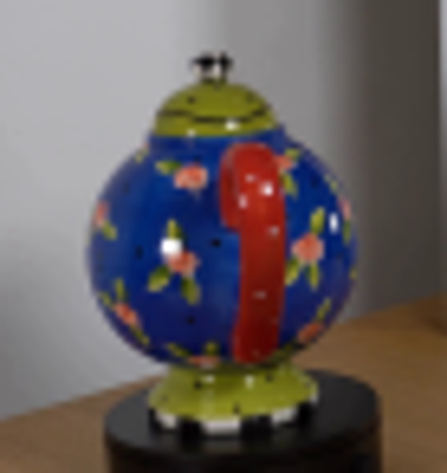
视觉工具实际返回图片 3
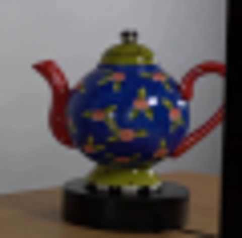
视觉工具实际返回图片 4
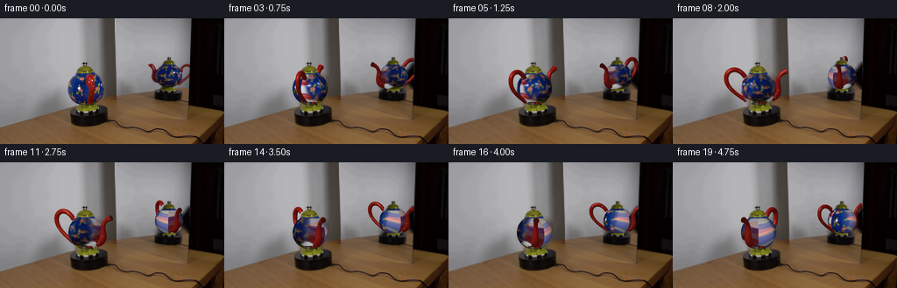
视觉工具实际返回图片 5
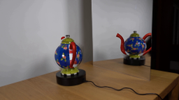
视觉工具实际返回图片 6
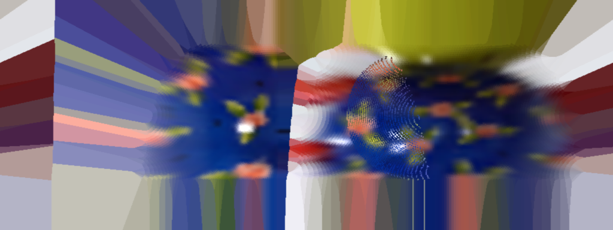
视觉工具实际返回图片 7

视觉工具实际返回图片 8
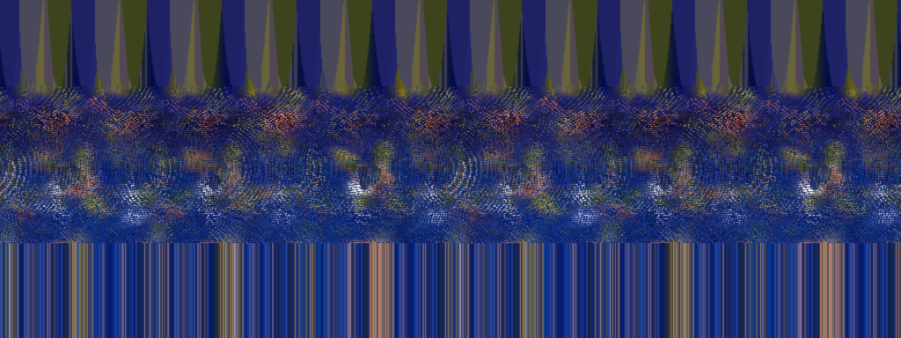
视觉工具实际返回图片 9

视觉工具实际返回图片 10
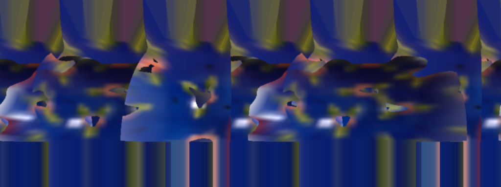
视觉工具实际返回图片 11

视觉工具实际返回图片 12
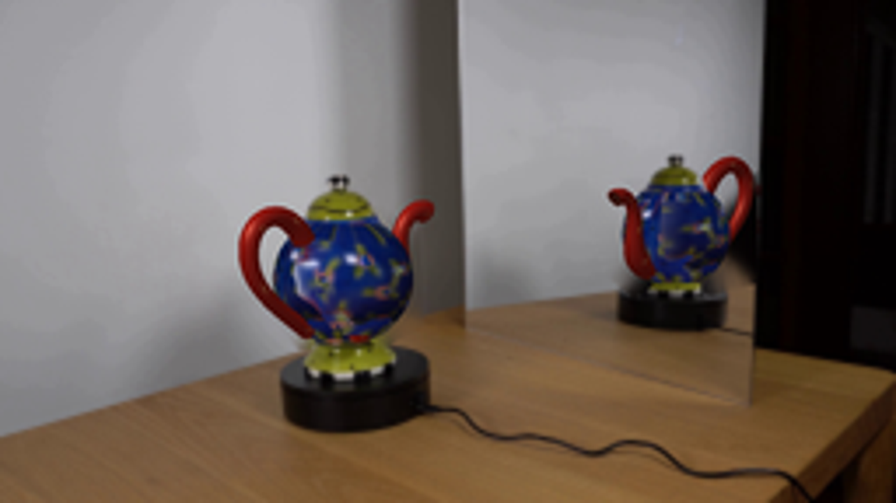
视觉工具实际返回图片 13
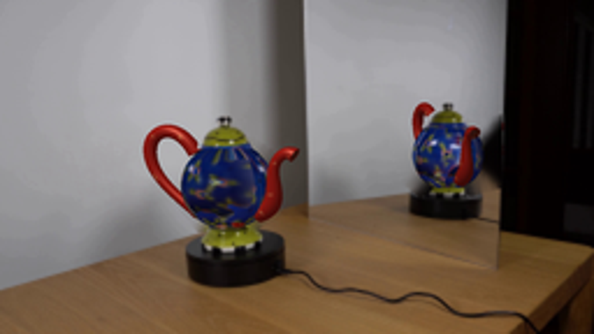
视觉工具实际返回图片 14

保存候选 7 份；完成命令 12 次；可验证图片返回 14 张。原始 API 响应与完整日志保留在本地。